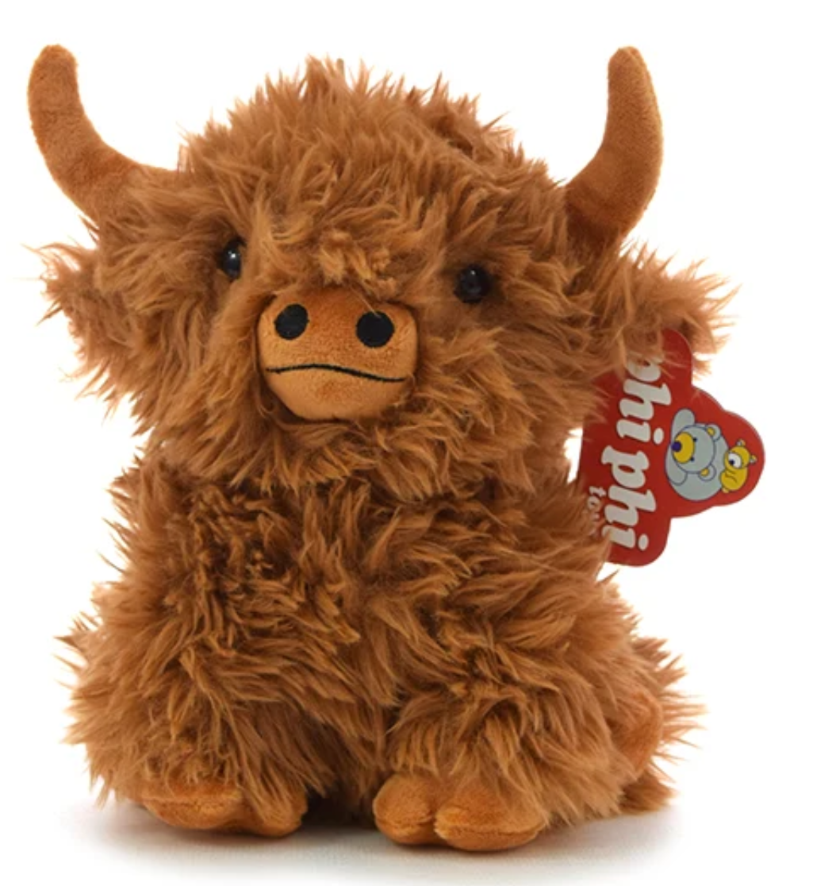
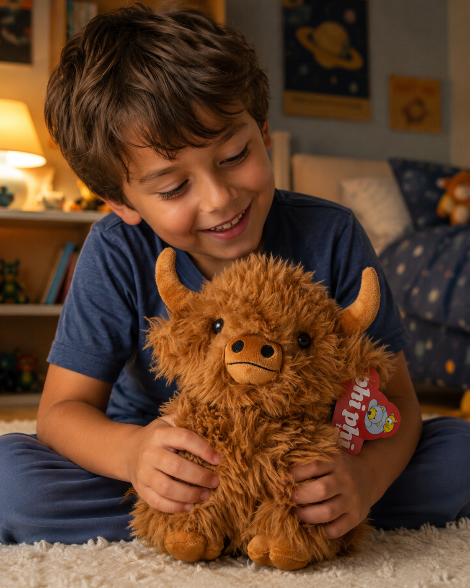

En la Clase 01 vimos que la IA generativa es una de las tres familias de IA. Acá entramos a fondo: qué modelo conviene para cada formato, qué hay hoy en Google Labs, y un caso real armado en dos pasos, de una foto de producto a un video.
Crea contenido nuevo, texto, imagen, audio o video, a partir de patrones que aprendió de datos existentes. No busca ni recupera algo que ya existe: le das un prompt (y a veces una referencia) y el modelo arma algo que no existía literalmente así hasta ese momento.
Las GANs (redes generativas adversarias) muestran las primeras imágenes sintéticas creíbles.
Los modelos de difusión (DALL·E, luego Stable Diffusion) hacen la generación de imagen accesible para cualquiera.
El quiebre masivo: ChatGPT, Midjourney y Stable Diffusion salen al público casi al mismo tiempo. Deja de ser un experimento de laboratorio.
Convergencia multimodal: texto, imagen, audio y video empiezan a vivir en la misma herramienta (Gemini, Flow, Sora).
Mejoras cada pocos meses: más resolución, más coherencia, más control y modelos cada vez más baratos de correr.
Quién compite hoy: OpenAI (ChatGPT, DALL·E, Sora), Google (Gemini, Nano Banana, Veo, Flow), Midjourney, Runway, Stability AI (imagen y video), ElevenLabs (voz), Suno (música). La lista cambia rápido: cada uno mejora su modelo cada pocos meses, y lo que hoy es el mejor puede no serlo en un trimestre.
No es lo mismo que conversar o que actuar: la IA conversacional entiende y razona con vos (Claude, Gemini como chat), y la agéntica usa herramientas para completar tareas solas. La generativa es la que produce el archivo final: la imagen, el video, la canción.
ChatGPT, Gemini y Flow suenan parecido pero no compiten en lo mismo. Cada uno tiene un modelo especializado atrás según el formato que le pidas.
El modelo de conversación de OpenAI. Redacta, razona, resume, programa y también genera imágenes (GPT Image) directo desde el chat, sin cambiar de herramienta.
Nano Banana es el modelo de imagen de Gemini: genera y edita fotos a partir de texto y referencias, entiende contexto real y mantiene coherencia entre variaciones. Vive dentro de la app de Gemini y también dentro de Google Flow.
Veo es el modelo de video dentro del workspace Flow: acepta una imagen de partida como primer frame y la anima, con audio sincronizado, en clips cortos listos para usar.
La diferencia entre un resultado genérico y uno usable está en el detalle: sujeto, estilo, encuadre, luz, y qué tan fiel tiene que ser a una referencia.
"Ubicá este producto [imagen adjunta] sobre una mesa de living, luz natural cálida de tardecita, estilo editorial de revista de diseño, fondo desenfocado, mantené el envase idéntico a la referencia."
"Animá esta imagen [primer frame adjunto]: cámara que se acerca lento, el líquido se mueve dentro del envase, luz que titila suave, 4 segundos, sin cortes de cámara."
El patrón se repite: sujeto + acción o estilo + qué se mantiene fijo + qué se puede mover. Cuanto más de eso definís vos, menos tiene que "adivinar" el modelo.
El espacio donde Google libera herramientas de IA antes de que sean "producto final". Acceso con tu cuenta de Google, sin instalar nada. Hoy tiene cuatro frentes: video, música, marca y diseño de UI.
El workspace de creación audiovisual: Gemini entiende la instrucción, Nano Banana genera y edita las imágenes, y Veo las anima con audio sincronizado. Absorbió lo que antes eran Whisk e ImageFX.
El estudio de música con un productor de IA: compone canciones originales y video musicales, permite editar por secciones y armar covers completos de un track.
Genera contenido de marketing on-brand y escalable: parte de tu identidad de marca y arma variaciones de contenido para conectar con tu audiencia más rápido.
Convierte una idea en pantallas de interfaz reales, en tiempo real. Es la respuesta de Google a herramientas como Claude Design: de la idea a la UI, sin pasar por Figma primero. Útil incluso si no sos diseñador y solo querés mostrar rápido cómo se vería una idea.
A diferencia de Labs (herramientas ya armadas para crear contenido), AI Studio es donde probás los modelos de Gemini directamente: ajustás el prompt, la temperatura, subís imágenes de referencia, y podés sacar una API key gratis para conectarlo a tu propia app. Es el mismo concepto que vimos con la API de Claude en la Clase 01, pero del lado de Google.
La diferencia no es la calidad, es el acceso: Google lo mete gratis dentro de tu cuenta de Google, mientras que la mayoría de la competencia cobra suscripción desde el primer uso serio. A cambio, son herramientas experimentales: cambian de nombre, se fusionan (como pasó con Whisk e ImageFX dentro de Flow) y a veces desaparecen sin aviso. Buenas para probar una idea rápido, no para depender de ellas en un flujo de producción estable.
El patrón más productivo no es encontrar "la mejor" herramienta: es encadenar varias, donde el resultado de una se convierte en el input de la siguiente.
Generás o editás una imagen fiel con Nano Banana o ChatGPT, y esa imagen entra a Google Flow como primer frame para animarla con Veo.
ChatGPT arma la composición rápido, y Nano Banana Pro sube el detalle y la fidelidad final para una escena compleja.
Una canción compuesta en Flow Music o Suno se convierte en la base de un video musical generado en el mismo workspace.
Una imagen o ilustración generada entra como asset a Figma o Claude Design para maquetarla dentro de una pieza real: banner, landing, deck.
Un flujo real, en dos pasos: le dimos a ChatGPT una foto de producto lisa y le pedimos una escena con un estilo definido. Con esa imagen como primer frame, Google Flow generó el video.

Fondo blanco, sin escena ni estilo. Es lo único que definimos a mano.

Le pedimos que ubique el producto en una escena de uso real, con un estilo cálido y cinematográfico, manteniéndolo fiel a la referencia.
Esa imagen entra a Flow como primer frame, y Veo la anima con sonido sincronizado.
Por qué importa este orden: generar el video directo desde un prompt de texto suele perder el producto real. Anclar primero una imagen fiel (con ChatGPT o con Nano Banana) y recién ahí animarla con Veo es lo que mantiene el producto reconocible en movimiento.